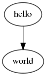
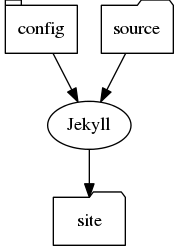

First, Install graphviz using (on Ubuntu 11.10)
sudo apt-get install graphviz
Next, Download planetUML from http://plantuml.sourceforge.net/download.html Save the .jar file into your favourite apps directory, e.g. ~/apps
Finally, setup .emacs file using the instructions given here.
Enter the following into an org-mode buffer and then publish (C-c C-e)
#+begin_src dot :file helloworld.png :cmdline -Kdot -Tpng
digraph test123 {
a [label="hello"];
b [label="world"];
a -> b;
}
#+end_src
Should generate a file helloworld.png that looks like this:

There are a number of pre-defined shapes - box, circle, rectangle, etc. To change a node shape, simple enter shape="type" in the node [attribute] list, so for example:
#+begin_src dot :file helloworld.png :cmdline -Kdot -Tpng
digraph test123 {
config [label="config", shape="tab"];
source [label="source", shape="folder"];
jekyll [label="Jekyll", shape="oval"];
site [label="site", shape="folder"];
config -> jekyll;
source -> jekyll;
jekyll -> site;
}
#+end_src
Which will produce this:

Other useful attributes include style=filled fillcolor=value (Red, Yellow,..)
The type of edges in a graph are set by the graph type - directed (digraph) graphs have edges that have arrows, and undirected (graph) have edges that do not have arrows.
The examples shown above are both digraph - directed graphs - so have arrows by default on the edges (which are defined in the source with ->). Undirected graphs have edges that are defined in source with -- instead of ->
By default, directed graphs have edges with arrow-heads on the 'right' side of the edge.
There are a number of different arrow types that can be defined by by using the arrowhead and arrowtail attributes along with the dir attribute.
dir = 'forward' | 'back' | 'both' | 'none'
For example, the following code:
#+Begin_src dot :file ../media/dia/example3.png :cmdline -Kdot -Tpng
digraph example3 {
candidate [label="Candidate", shape="rectangle"];
reviewer [label="Reviewer", shape="rectangle"];
appraisal [label="Appraisal", shape="rectangle"];
report [label="Report", shape="rectangle"];
candidate -> reviewer [label="invites", arrowhead="crow"]
candidate -> appraisal [label="performs", dir="both", arrowhead="crow", arrowtail="crow"]
appraisal -> report [label="generates", arrowhead="none"]
}
#+end_src
Produces the following diagram: